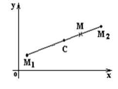

6.1.2. Деление отрезка в данном отношении

Точка  делит отрезок в отношении
делит отрезок в отношении  ,
если . Тогда
,
если . Тогда
делит отрезок в отношении ,
если . Тогдаа отсюда
и координаты точки М находятся по формулам:
Координаты точки разделяющей
отрезок в данном соотношении
.
Координаты середины отрезка  получаются
при, то есть :
получаются
при, то есть :
получаются
при, то есть :
Координаты середины
отрезка
Отметим, что число не
зависит от того, как выбрано положительное направление на отрезке , так как при изменении направления
на противоположное не меняется.
не
зависит от того, как выбрано положительное направление на отрезке , так как при изменении направления
на противоположное не меняется.